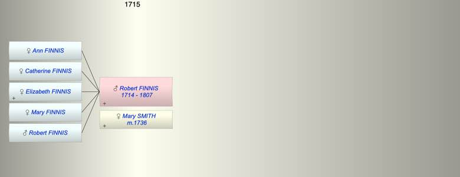

| [Index] |
| Robert FINNIS (1714 - 1807) |
|  |
| b. 1714 at Sutton |
| m. 16 Oct 1736 Mary SMITH at Sutton |
| d. 23 May 1807 aged 93 |
| Children (5): |
| Ann FINNIS |
| Catherine FINNIS |
| Elizabeth FINNIS |
| Mary FINNIS |
| Robert FINNIS |
| Events in Robert FINNIS (1714 - 1807)'s life | |||||
| Date | Age | Event | Place | Notes | Src |
| 1714 | Robert FINNIS was born | Sutton | Note 1 | ||
| 16 Oct 1736 | 22 | Married Mary SMITH | Sutton | Note 2 | |
| 23 May 1807 | 93 | Robert FINNIS died | Note 3 | ||
| Personal Notes: |
|
Will of Robert Finnis the elder of Coldred
- all his property to his son Robert, - to his daughter Ann Finnis £4500 - to his daughter Mary Finnis £4500 - to his daughter Catherine Finnis £4500 - to his daughter Elizabeth Harnett wife of Peter Harnett £4500 - residue to his son Robert to be executor Witnesses John Makey, Charles Bentley, Thomas Wood Proved 21 Nov 1807 by Robert Finnis, Goods, chattels and ? do not amount to £20000 Deceased died 23 May 1807 |
| Created on a Mac™ using iFamily for Mac™ on 8 Oct 2023 |